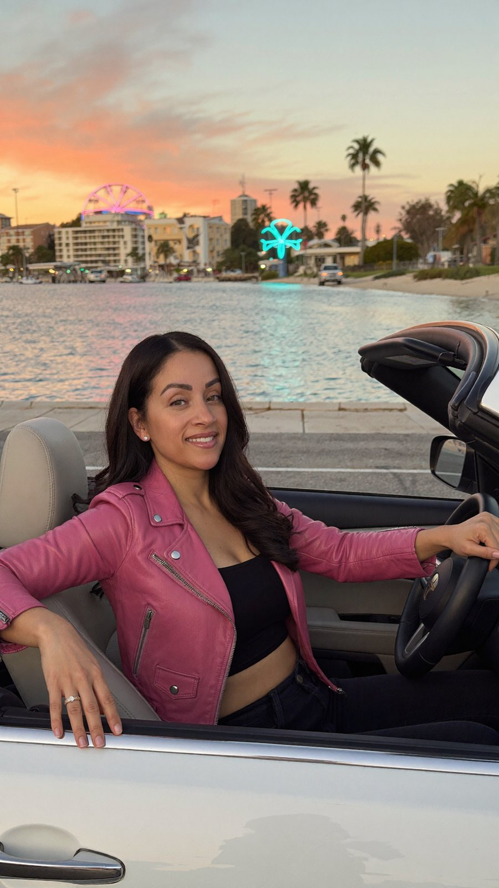
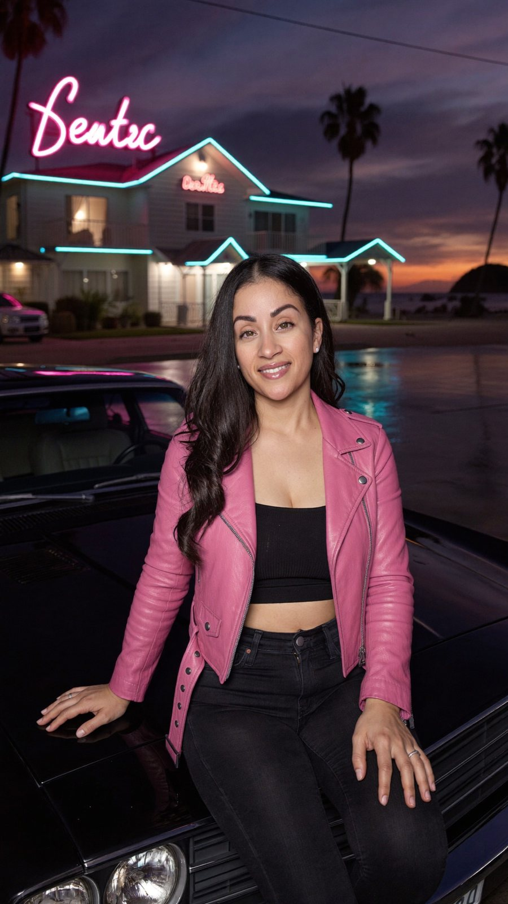
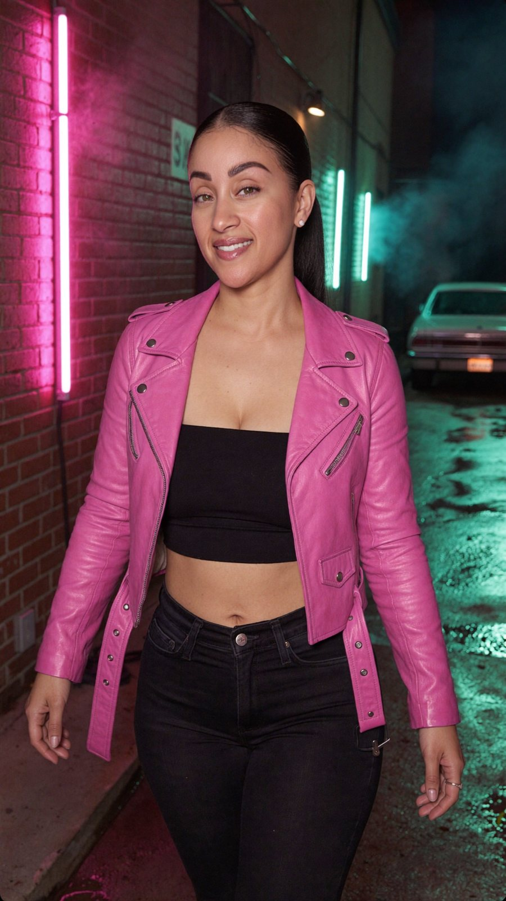
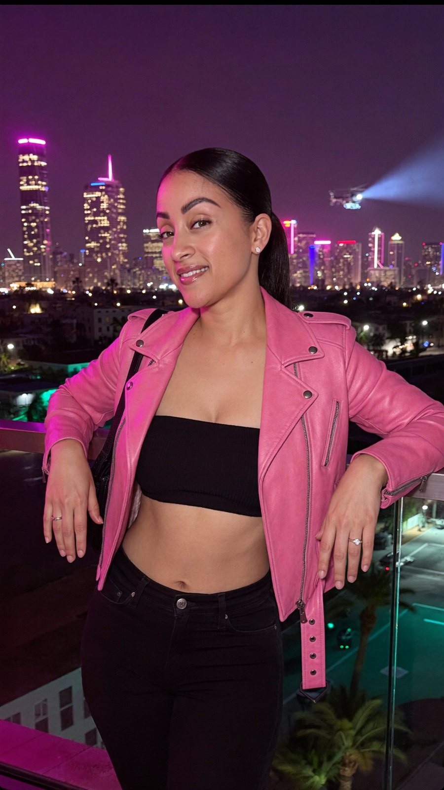
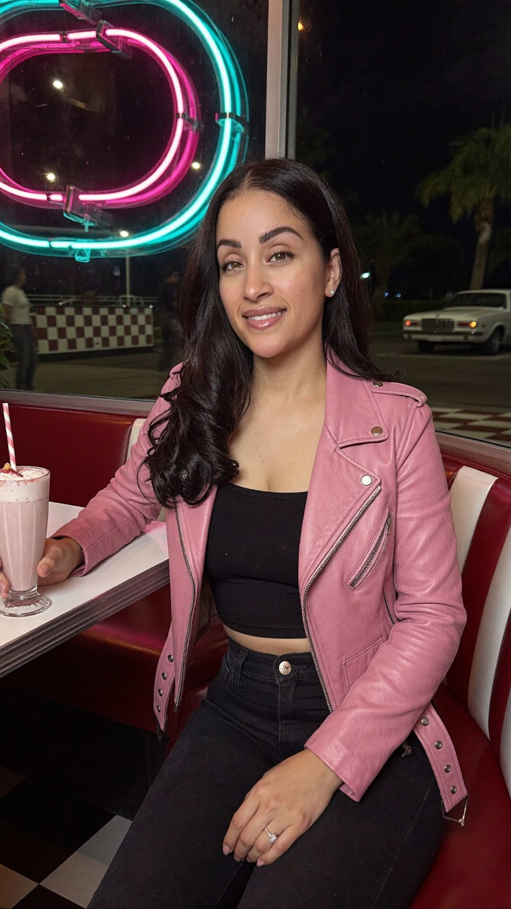
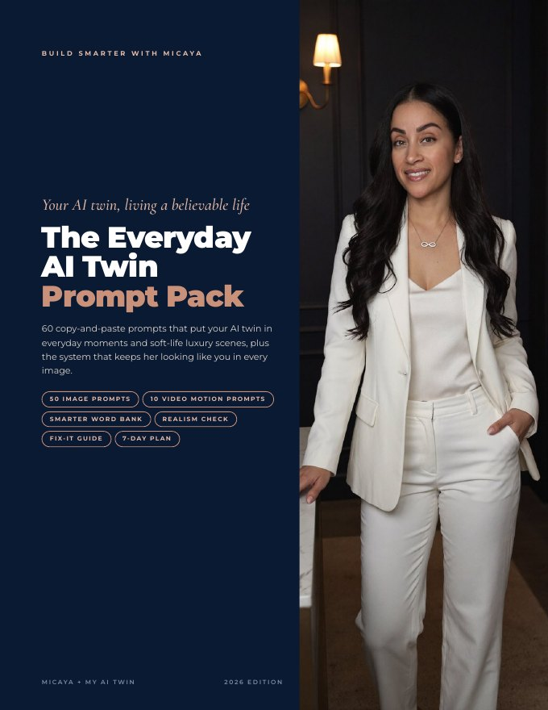

Six scenes, the exact prompts behind each one, and the video prompts that made them move. Swap the brackets for your own details and keep everything else word for word.
Every prompt has the same fill-in brackets. Write them once and reuse them in every scene, so it's the same woman every time: [YOUR TWIN] (age and look), [BODY TYPE], [HAIR COLOR] + [HAIR STYLE], [EYE COLOR], [SIMPLE JEWELRY].
Use a tool that saves your face as a character (I used Higgsfield Soul 2.0 with my trained Soul ID). Portrait 9:16, 2–3 options per prompt. Other tools can work too, so test one cheap, low-quality generation first.
SCENE 01
The Getaway
A parked convertible at sunset, the "main character just pulled up" shot.

IMAGE PROMPT
Waist-up medium shot, cinematic sunset photo of [YOUR TWIN — e.g. petite woman in her 40s], [BODY TYPE — e.g. slim thick, athletic, toned defined abs]. [HAIR COLOR] hair in [HAIR STYLE]. [EYE COLOR] eyes, [SIMPLE JEWELRY — e.g. diamond stud earrings, wedding ring]. Open hot-pink leather moto jacket, black cropped tube top, black high-waisted jeans. She sits in the driver's seat of a parked white 1980s convertible with the top down and the driver's door closed, her left forearm resting on top of the closed door, her right hand on the steering wheel, face toward the camera, soft natural closed-mouth smile. Framed from the waist up, her face large and clear in the frame. Behind her a calm waterfront bay with teal water, palm trees and a pastel art-deco skyline with pink and teal neon starting to glow under an orange-pink sunset sky; the car is parked, no traffic. Warm golden sunset light on her face. Background sharp and in focus, deep depth of field. She is alone, both hands visible and natural. No text, no logos. Photorealistic, ultra-realistic skin texture with visible pores, modern phone camera look, cinematic color grade.
Made with this exact prompt · hair: loose waves, natural middle part
MAKE IT MOVE · VIDEO PROMPT
Real-time speed, single continuous take, no cuts, no transitions, no speed ramps, no slow motion. Camera: a breathing tripod frame, no handheld shake, no pans. 0.0s to 2.0s: she turns her head toward the water as the breeze lifts her hair. 2.0s to 4.0s: she turns back and looks into the camera with a soft smile. 4.0s to 5.0s: she holds the look. Background in real time: water ripples, palm trees sway, the skyline neon glows. Same woman, same face and features as the first frame throughout, she does not talk. Photorealistic, no distortion, no extra people, no text.
Start and end frame = your image · 5 seconds · 720p · no audio
SCENE 02
Loading Screen
Sitting on the hood of a muscle car, like a game loading screen.

IMAGE PROMPT
Waist-up medium shot, cinematic night photo of [YOUR TWIN — e.g. petite woman in her 40s], [BODY TYPE — e.g. slim thick, athletic, toned defined abs]. [HAIR COLOR] hair in [HAIR STYLE]. [EYE COLOR] eyes, [SIMPLE JEWELRY — e.g. diamond stud earrings, wedding ring]. Open hot-pink leather moto jacket, black cropped tube top, black high-waisted jeans. She sits on the hood of a parked glossy black 1970s muscle car, one hand resting on the hood beside her, the other on her knee, face toward the camera, soft natural closed-mouth smile. Framed from the waist up, her face large and clear in the frame. Behind her a retro two-story beach motel outlined in hot-pink and teal neon tube shapes, palm trees, purple night sky with a last band of orange sunset, wet pavement reflecting neon; the neon signs are shapes only. Hot-pink and teal neon rim light on her. Background sharp and in focus, deep depth of field. She is alone, both hands visible and natural. No text, no logos. Photorealistic, ultra-realistic skin texture with visible pores, modern phone camera look, cinematic color grade.
Made with this exact prompt · hair: loose waves, natural middle part
MAKE IT MOVE · VIDEO PROMPT
Real-time speed, single continuous take, no cuts, no transitions, no speed ramps, no slow motion. Camera: a breathing tripod frame, no handheld shake, no pans. 0.0s to 2.0s: she lifts her chin and settles her hand on the hood. 2.0s to 4.0s: she gives the camera a confident look and a small smile. 4.0s to 5.0s: she holds still. Background in real time: neon flickers, reflections ripple on the wet pavement, palm fronds move in the wind. Same woman, same face and features as the first frame throughout, she does not talk. Photorealistic, no distortion, no extra people, no text.
Start and end frame = your image · 5 seconds · 720p · no audio
SCENE 03
The Walk
Walking toward the camera through a neon alley. Big energy, no props needed.

IMAGE PROMPT
Waist-up medium shot, cinematic night photo of [YOUR TWIN — e.g. petite woman in her 40s], [BODY TYPE — e.g. slim thick, athletic, toned defined abs]. [HAIR COLOR] hair in [a sleek slicked-back ponytail]. [EYE COLOR] eyes, [SIMPLE JEWELRY — e.g. diamond stud earrings, wedding ring]. Open hot-pink leather moto jacket, black cropped tube top, black high-waisted jeans. She walks toward the camera mid-stride down a narrow alley, arms relaxed and natural at her sides, face toward the camera, soft natural closed-mouth smile. Framed from mid-thigh up, her face large and clear in the frame. Behind her brick walls lined with hot-pink and teal neon tube lights, light steam, wet pavement reflecting neon, a parked classic car at the end of the alley. Hot-pink and teal neon rim light on her. Background sharp and in focus, deep depth of field. She is alone, both hands visible and natural. No text, no logos. Photorealistic, ultra-realistic skin texture with visible pores, modern phone camera look, cinematic color grade.
Made with this exact prompt · hair: sleek slicked-back ponytail
My B-roll clip from this prompt (Seedance 2.5, 8 seconds, start frame only).
MAKE IT MOVE · VIDEO PROMPT
Real-time speed, single continuous take, no cuts, no transitions, no speed ramps, no slow motion. Same woman, same face and features as the first frame throughout; she does not talk, lips together throughout, soft relaxed closed-mouth smile throughout, as in the first frame. She walks toward the camera down the narrow neon alley at a relaxed, confident, steady pace, each heel landing first and her weight rolling through each step, arms swinging gently in opposition at her sides. Her sleek ponytail sways slightly behind her and the open pink leather jacket shifts and creases with each step. About halfway through she glances to the side at the pink neon wall, then looks back to the camera. The alley stays still and real around her: the parked classic car stays parked, light steam drifts slowly up from the ground, and neon reflections shimmer on the wet pavement as she passes. Hot-pink neon from the left and teal neon from the right light her face and outline her hair. Camera: a handheld operator walking backward at her exact pace, holding the same distance and framing, slight breathing sway and gentle footstep bob, small natural reframes, no pans, no zoom. Background sharp and in focus. Photorealistic night video, natural skin texture, no 3D, no CGI, no cartoon. She is alone. No text, no logos.
Start frame = your image (no end frame) · 8 seconds · no audio · trim the best 3–5s
SCENE 04
Golden Hour Run
At the helm of a moving boat, neon skyline behind you. Soft life meets GTA.
IMAGE PROMPT
Waist-up medium shot, cinematic golden hour photo of [YOUR TWIN — e.g. petite woman in her 40s], [BODY TYPE — e.g. slim thick, athletic, toned defined abs]. [HAIR COLOR] hair in [loose waves, moving in the wind]. [EYE COLOR] eyes, [SIMPLE JEWELRY — e.g. diamond stud earrings, wedding ring]. Open hot-pink leather moto jacket, black cropped tube top, black high-waisted jeans. She stands at the helm of a moving white speedboat, one hand on the steering wheel behind the windshield, the other resting on her hip, face toward the camera, soft natural closed-mouth smile. Framed from mid-thigh up, her face large and clear in the frame. Behind her bright teal water with a white wake trailing behind the boat, a waterfront skyline of modern towers and pastel art-deco hotels with hot-pink and teal neon tube outlines and a glowing neon palm-tree shape on the buildings, palm trees along the shore, warm orange-pink sunset sky. Warm golden-hour sunlight on her face. Background sharp and in focus, deep depth of field. She is alone, both hands visible and natural. No text, no logos. Photorealistic, ultra-realistic skin texture with visible pores, modern phone camera look, cinematic color grade.
Made with this exact prompt · hair: loose waves, moving in the wind
MAKE IT MOVE · VIDEO PROMPT
Real-time speed, single continuous take, no cuts, no transitions, no speed ramps, no slow motion. Camera: a breathing tripod frame, no handheld shake, no pans. 0.0s to 2.0s: she glances over her shoulder at the skyline, hair blowing back. 2.0s to 4.0s: she turns back to the camera with a soft smile, hand steady on the wheel. 4.0s to 5.0s: she holds the look. Background in real time: the wake churns, spray rises, the boat moves forward. Same woman, same face and features as the first frame throughout, she does not talk. Photorealistic, no distortion, no extra people, no text.
Start and end frame = your image · 5 seconds · 720p · no audio
SCENE 05
Top of the City
Rooftop at night, helicopter spotlight overhead. The most "GTA" shot in the set.

IMAGE PROMPT
Waist-up medium shot, cinematic night photo of [YOUR TWIN — e.g. petite woman in her 40s], [BODY TYPE — e.g. slim thick, athletic, toned defined abs]. [HAIR COLOR] hair in [a sleek slicked-back ponytail]. [EYE COLOR] eyes, [SIMPLE JEWELRY — e.g. diamond stud earrings, wedding ring]. Open hot-pink leather moto jacket, black cropped tube top, She stands on a rooftop leaning one forearm on a glass railing, body angled slightly, face toward the camera, soft natural closed-mouth smile. Framed from mid-thigh up, her face large and clear in the frame. Behind her a city skyline glowing with hot-pink and teal neon, a helicopter with a spotlight in the purple night sky, palm trees below. Hot-pink and teal neon rim light on her. Background sharp and in focus, deep depth of field. She is alone, both hands visible and natural. No text, no logos. Photorealistic, ultra-realistic skin texture with visible pores, modern phone camera look, cinematic color grade.
Made with this exact prompt · hair: sleek slicked-back ponytail
My B-roll clip from this prompt (Seedance, 5 seconds, start and end frame = the image).
MAKE IT MOVE · VIDEO PROMPT
Real-time speed, single continuous take, no cuts, no transitions, no speed ramps, no slow motion. Camera: a breathing tripod frame, no handheld shake, no pans. 0.0s to 2.0s: she turns her head and glances up toward the helicopter in the sky behind her. 2.0s to 4.0s: she turns back and looks straight into the camera with a soft, natural smile. 4.0s to 5.0s: she holds the look, forearm resting on the railing. Background in real time: the helicopter flies across the sky with its spotlight sweeping, car headlights drive along the street below. Same woman, same face and features as the first frame throughout, she does not talk. Photorealistic, no distortion, no extra people, no text.
Start and end frame = your image · 5 seconds · 720p · no audio
SCENE 06
Neon Diner
Retro diner booth, strawberry milkshake, neon in the window.

IMAGE PROMPT
Waist-up medium shot, cinematic night photo of [YOUR TWIN — e.g. petite woman in her 40s], [BODY TYPE — e.g. slim thick, athletic, toned defined abs]. [HAIR COLOR] hair in [HAIR STYLE]. [EYE COLOR] eyes, [SIMPLE JEWELRY — e.g. diamond stud earrings, wedding ring]. Open hot-pink leather moto jacket, black cropped tube top, black high-waisted jeans. She sits in a red vinyl booth of a retro 1980s diner, one forearm resting on the table beside a strawberry milkshake glass, the other hand relaxed in her lap, face toward the camera, soft natural closed-mouth smile. Framed from the waist up, her face large and clear in the frame. Behind her a large window with hot-pink and teal neon tube shapes glowing, chrome details, checkered floor, palm trees and a parked classic car visible outside at night. Hot-pink and teal neon glow on her face. Background sharp and in focus, deep depth of field. She is alone, both hands visible and natural. No text, no logos. Photorealistic, ultra-realistic skin texture with visible pores, modern phone camera look, cinematic color grade.
Made with this exact prompt · hair: loose waves, natural middle part
MAKE IT MOVE · VIDEO PROMPT
Real-time speed, single continuous take, no cuts, no transitions, no speed ramps, no slow motion. Camera: a breathing tripod frame, no handheld shake, no pans. 0.0s to 2.0s: she glances out the window as headlights pass outside. 2.0s to 4.0s: she looks back at the camera with a soft smile. 4.0s to 5.0s: she holds the look. Background in real time: car headlights move past outside, the neon hums and glows. Same woman, same face and features as the first frame throughout, she does not talk. Photorealistic, no distortion, no extra people, no text.
Start and end frame = your image · 5 seconds · 720p · no audio
WHAT I LEARNED THE HARD WAY
Waist-up framing keeps your face big enough for the AI to hold on to, especially in video.
Background in focus. Blur in your image carries straight into your video.
Scenes have to make sense. A moving car needs a driver. When in doubt, park the car.
Video in real time, one action per beat. Skip "slowly" and "subtle," AI video already leans slow-motion.
No game logos or titles. Get the vibe from hot pink, teal, palm trees and neon.
The couples version is in the PDF.
Ready for more?
Make your twin the main character every day

$19
The Everyday AI Twin Prompt Pack
50 image prompts and 10 video motion prompts for real life: work, soft life, travel, editorial and more.